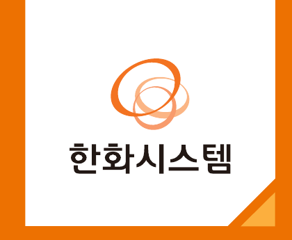

PROPOSAL MANAGEMENT SYSTEM
ProWin
제안관리 시스템 성과 보고
황금빛, 홍건의, 박혜림, 서준혁
ⓒ Hanwha Systems. All rights reserved

CONTENTS
Part. 1 개요
01 성과 요약
02 ProWin 소개
03 추진 배경
04 목표 및 기대효과
Part. 2 구현 내용
05 업무 흐름
06 주요 기능
07 부가 기능 및 기술 구성
Part. 3 향후 계획
08 고도화 계획
ⓒ Hanwha Systems. All rights reserved
개요
성과 요약
연말 성과
제안 업무 전 과정을 담은 시스템을 구현했고, PPT 처리 핵심 기술의 실현성을 검증했습니다.
업무 흐름과 역할별 화면을 정립했으며, 추후 자동 추출과 사례 추천으로 고도화합니다.
전 과정
제안 업무 화면 구현
제안 현황, 일정, 소통, 조견표 등 제안 업무 전반의 화면
역할별 화면과 권한 구성
4종
핵심 기능 구현
RFP · 요구사항, 목차, 제안서 검토, 제안서 관리
데이터 저장과 PPT 처리까지 실제 동작
4건
핵심 기술 검증
PPT 업로드, 내용 추출, 미리보기, 합본의 실현성 확인
합본은 목차 순서의 하나의 제안서로 자동 생성
4단계
표준 업무 흐름 정립
착수, 작성, 검토, 확정 단계별 역할과 화면의 연결
역할별 업무가 하나의 흐름으로 연결
다음 단계요구사항 자동 추출과 유사 사례 추천을 추후 고도화하여 제안 작성 업무의 효율 제고
3
개요
ProWin 소개
시스템 소개
제안 업무를 사람의 역량이 아닌 표준 절차와 축적된 자산으로 수행하는 제안관리 시스템입니다.
제안(Proposal)을 통해 수주(Win)를 이끌어내는 것이 목적입니다.
표준 절차
제안 전 과정을 표준 절차와 템플릿으로 체계화
임시 TF와 개인 역량에 의존하는 구조에서 탈피
목차를 기준으로 진척 관리
버전관리
PPT를 올리면 이력(커밋)이 자동으로 보존
전체 섹션 최신본을 목차 순서로 합본
합본은 불변 스냅샷으로 관리
자산 라이브러리
과거 제안서를 페이지 단위로 적재
검색과 재활용으로 반복 재작성 제거
축적된 자산을 새 제안에 활용
운영 원칙문서 작성은 기존 오피스(PPT, 엑셀)를 그대로 활용하고, 시스템은 업로드, 처리, 다운로드를 담당
4
개요
추진 배경
현행 제안 업무
현행 제안 업무는 전담 조직과 표준, 시스템 없이 개인 역량과 수작업에 의존하고 있습니다.
제안 건수가 늘수록 품질과 생산성이 하락하는 구조입니다.
01
전담 조직 부재
RFP(제안요청서)마다 임시 TF를 구성
매 건 처음부터 반복, 담당자 역량에 따라 품질 좌우
02
수작업 산출물
조견표, 합본, 목차를 수작업으로 작성
작성 오류, 버전 혼선, 마감 리스크 상시 발생
03
자산의 분산과 미활용
과거 제안 자산이 개인 단위로 분산
재활용이 어려워 매 제안마다 재작성
04
구두 중심의 리뷰
리뷰와 의사결정이 구두로 진행
결정 근거가 남지 않아 추적과 인수인계가 어려움
시사점표준 절차 확립조직과 개인 역량에 의존하지 않는 수행
산출물 처리 체계화업로드 기반의 이력 관리와 합본
자산과 기록 중심 운영재활용 자산 축적, 근거 기록 기반 의사결정
5
개요
목표
효율화 · 자산화 · 경쟁력
제안 수행 체계를 효율화, 자산화, 경쟁력 확보의 세 방향으로 전환하는 것이 목표입니다.
제안을 ‘사람 수’가 아닌 ‘축적된 자산과 표준 절차’로 수행합니다.
01
효율화
제안 전 과정을 표준 절차와 템플릿으로 체계화하여 임시 TF와 개인 역량 의존 구조에서 탈피
표준 절차 기반 수행 체계
02
자산화
과거 제안 산출물을 검색과 재활용이 가능한 자산 라이브러리로 축적하여 반복 재작성 제거
재활용 가능한 제안 자산
03
경쟁력
소수 인력으로 제안 품질을 유지하고 제안 투입 인건비 절감
제안 경쟁력 강화
달성 수단표준 절차, 버전관리, 자산 라이브러리 기능으로 세 가지 목표를 구현
6
개요
기대효과
도입 전후 비교
ProWin 도입으로 제안 수행이 개인 의존에서 표준 절차와 축적 자산 기반으로 바뀝니다.
수행 방식, 산출물, 자산, 의사결정 네 영역에서 변화가 나타납니다.
도입 전
도입 후
수행 방식
임시 TF 구성, 담당자 역량에 따른 품질 편차
표준 절차와 템플릿 기반 수행, 목차 기준 진척 관리
산출물
조견표, 합본, 목차의 수작업 작성과 버전 혼선
PPT 업로드 기반 이력 관리, 목차 순서 합본 자동 생성
자산
개인 단위 분산, 재활용 불가
자산 라이브러리 축적, 검색과 재활용
의사결정
구두 중심, 결정 근거 미기록
리뷰 코멘트와 변경 이력으로 근거 기록
7
구현
업무 흐름
역할별 프로세스
RFP 접수부터 최종 합본까지 역할별 업무가 하나의 흐름으로 연결됩니다.
PM·사업관리가 제안을 열고, 작업자가 작성하고, 참여 인원 전원이 검토한 뒤 PM·사업관리가 확정합니다.
STEP 01
제안 착수
PM · 사업관리
RFP 업로드, 요구사항 추출 고도화
제안 일정 등록
커뮤니케이션 관리 (공지, Q&A)
관련 화면RFP, 제안 일정, 커뮤니케이션
STEP 02
제안서 작성
작업자
요구사항별 유사 사례 검색 고도화
자산 라이브러리의 자료를 참고하여 작성
작성본을 제안서 관리에 업로드
관련 화면자산 라이브러리, 제안서 관리
STEP 03
제안서 검토
제안 참여 인원 전원
제안서 검토 화면에서 슬라이드 확인
슬라이드별 검토 의견 등록
의견 이력으로 결정 근거 기록
관련 화면제안서 검토
STEP 04
최종 확정
PM · 사업관리
최종본 합본 생성
목차와 조견표 검토
제출본 확정
관련 화면제안서 관리, 목차, 조견표
기대 효과요구사항 기준의 일정과 소통 일원화, 과거 사례 참조 기반 작성, 업로드만으로 이력과 합본 처리, 의견 기록의 축적
8
구현
RFP · 요구사항 관리
핵심 기능 1/4
RFP(제안요청서)와 요구사항을 한 화면에서 정리하여 제안 작업의 기준으로 삼습니다.
RFP 문서 정보와 요구사항 목록을 등록하고, 이후 목차와 조견표 작업의 기준으로 활용합니다.
1
RFP 문서 정보
파일명, 페이지 수, 수령일을 등록하여 제안 대상 문서를 관리합니다
2
요구사항 목록
코드, 제목, 설명 단위로 등록, 수정, 삭제하며 삭제 사유는 이력으로 남깁니다
화면 위치제안 워크스페이스 > RFP / 요구사항 · 시연용 예시 데이터
기준 일원화
문서와 요구사항을 한 화면에서 관리
변경 근거 보존
삭제 시 사유를 기록하여 이력 유지
9
구현
목차 관리
핵심 기능 2/4
목차 하나로 담당자와 진척 상태를 일원화합니다.
세부 목차가 PPT 업로드와 검토의 단위가 되어 모든 화면이 목차로 연결됩니다.
1
목차 구성
대분류와 세부 목차를 구분하며 세부 목차가 업로드와 검토의 단위입니다
2
담당과 진척 현황
담당자, 예상 장수, 상태(완료, 진행중, 보완)를 한눈에 관리합니다
화면 위치제안 워크스페이스 > 목차 · 시연용 예시 데이터
10
구현
제안서 검토
핵심 기능 3/4
슬라이드를 보며 참여 인원 전원이 의견을 남기고 결정 근거를 기록합니다.
업로드한 PPT의 제목과 핵심 내용이 검토 화면에 자동으로 반영됩니다.
1
슬라이드 미리보기
업로드한 PPT의 제목과 핵심 내용이 자동으로 반영됩니다
2
리뷰 코멘트
작성자별 의견을 일시와 함께 남겨 결정 근거를 보존합니다
화면 위치제안 워크스페이스 > 제안서 검토 · 시연용 예시 데이터
자동 반영
PPT의 제목과 핵심 내용을 자동 반영
의견 기록
작성자와 일시를 남기고 발표 자료 지정
기대 효과
구두 중심 리뷰를 기록 중심으로 전환
11
구현
제안서 관리 (버전 · 합본)
핵심 기능 4/4
PPT 업로드만으로 이력이 쌓이고 합본이 자동으로 완성됩니다.
세부 목차별 최신본이 목차 순서대로 묶여 하나의 제안서가 됩니다.
 12
121
업로드와 합본
세부 목차 단위로 PPT를 올리고, 합본으로 전체 제안서를 만듭니다
2
버전 이력(커밋)
누가 언제 어떤 목차를 올렸는지 이력으로 남고, 합본은 변경 불가한 스냅샷으로 보관합니다
화면 위치제안 워크스페이스 > 제안서 관리 · 시연용 예시 데이터
스냅샷 보관
목차 순서 합본을 변경 불가로 보관
12
구현
부가 기능 (1/2)
진행 · 소통 · 자산
핵심 기능 외에도 제안 업무 전반을 지원하는 화면을 갖추고 있습니다.
진행 현황, 일정, 소통, 조견표, 자산 라이브러리를 하나의 메뉴 체계로 제공합니다.
제안 현황
기간별 제안 진행 현황
제안서 홈
제안 개요, 오늘 할 일, 지연 항목
제안 일정
일정 등록과 색상 구분
커뮤니케이션
제안팀 공지, 공유 게시판
RFP Q&A, 참고 자료
제안 전용 게시판
조견표
요구사항과 목차 매핑
자산 라이브러리
과거 제안서 페이지 적재, 검색
워크스페이스 관리
제안 전용 게시판 관리
13
구현
부가 기능 (2/2)
비용 · 권한 · 운영
비용, 인력, 권한, 이력까지 하나의 시스템에서 관리합니다.
경비와 공수, 제안·시스템 단위 권한, 변경 이력을 제공합니다.
제안 경비 관리
자사, 외주 인건비, 디자인·인쇄비
수행 공수 관리
투입 M/M, 직급별 공수
제안 권한관리
제안 단위 멤버와 권한
시스템 접근 권한관리
프로젝트와 무관한 시스템 권한
사용 가이드
사이트 사용법 통합 안내
변경 이력
추가, 수정, 삭제 이력
14
구현
기술 구성
시스템 구성
단일 서버가 화면과 API를 함께 제공하여 가볍게 구축했습니다.
상용화 단계에서는 데이터, 보안, 운영 영역을 보완합니다.
사용자 브라우저
HTML, CSS, JavaScript
REST API
ProWin Backend
Spring Boot 3.3 · Java 17
RFP
목차
검토
버전관리
PPTX 추출, 미리보기, 합본 (Apache POI)
JDBC
저장소
기술 스택
프론트엔드
HTML, CSS, JavaScript
상용화 시 보완 방향
데이터 저장SQLite를 서버형 DB로 전환하여 동시 접속, 백업, 이중화 확보
인증과 보안사내 계정 연동, 서버 측 권한 검증, 접근 이력 관리
파일과 미리보기사내 파일 스토리지 이관, 서버 글꼴 설치로 PPT 표시 품질 확보
운영 체계배포 자동화, 모니터링, 정기 백업 체계 구축
15
계획
고도화 계획
추후 추진
요구사항 자동 추출과 유사 사례 추천을 추후 고도화하여 제안 작성 업무의 효율을 높이겠습니다.
업무 흐름의 STEP 01, STEP 02에 적용되는 과제이며, 상용화 보완 사항은 기술 구성에 정리했습니다.
업무 흐름 STEP 01
RFP 요구사항 자동 추출
RFP 업로드 시 요구사항 후보를 추출하여 목록에 반영하고, 담당자가 확인하여 확정합니다.
수작업 정리 부담 완화
업무 흐름 STEP 02
유사 과거 사례 추천
요구사항별로 유사한 과거 제안 사례를 의미 기반으로 검색하여 작성자에게 제시합니다.
과거 자산 재활용 확대
추가 고도화
제안서 목차 자동 인식
제안서 슬라이드 제목을 인식하여 목차와 연결
경비, 공수 자동 합계
입력값을 항목별, 전체 합계로 자동 계산
데이터 연동과 권한 정비
전 화면 데이터 연동 확대, 권한 체계 정비
추진 방향핵심 기능을 안정화한 뒤 자동 추출과 사례 추천을 단계적으로 적용
16